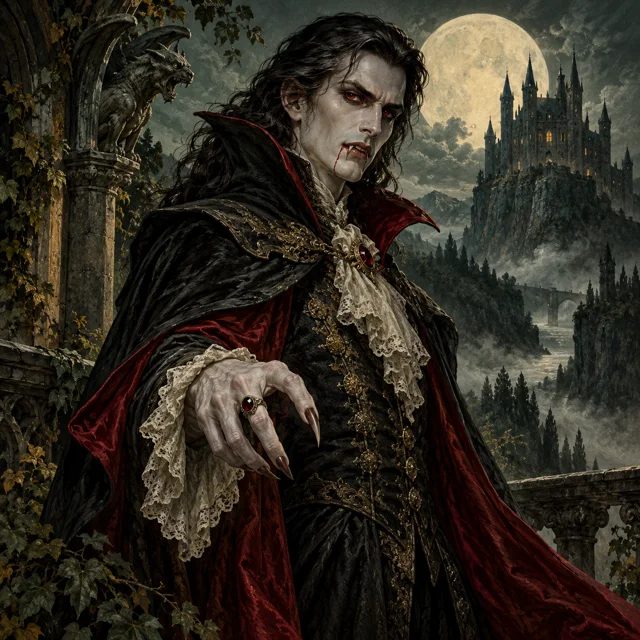
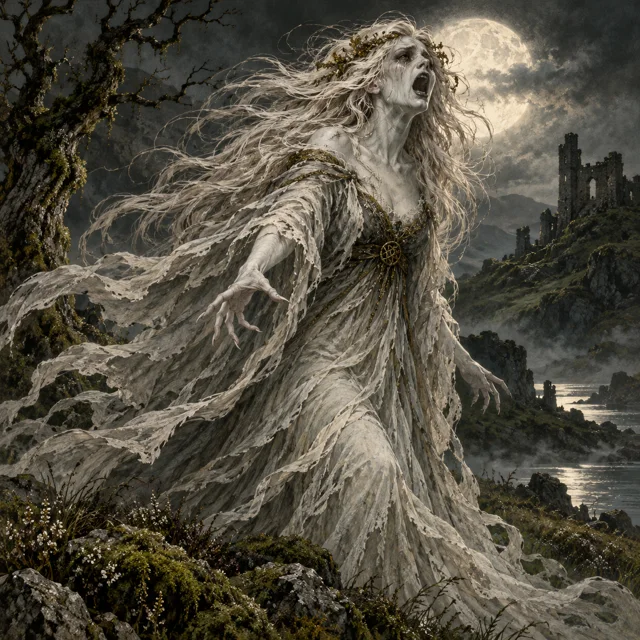
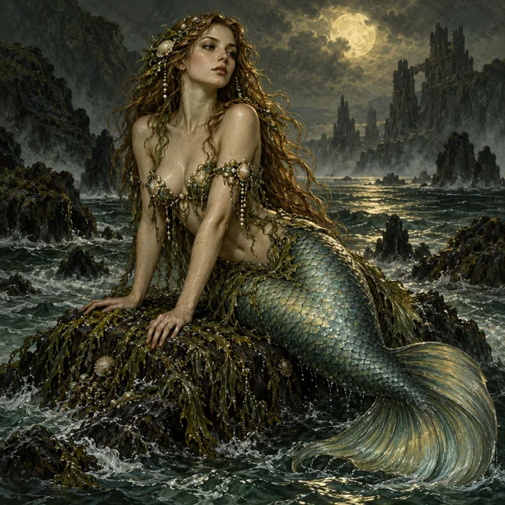
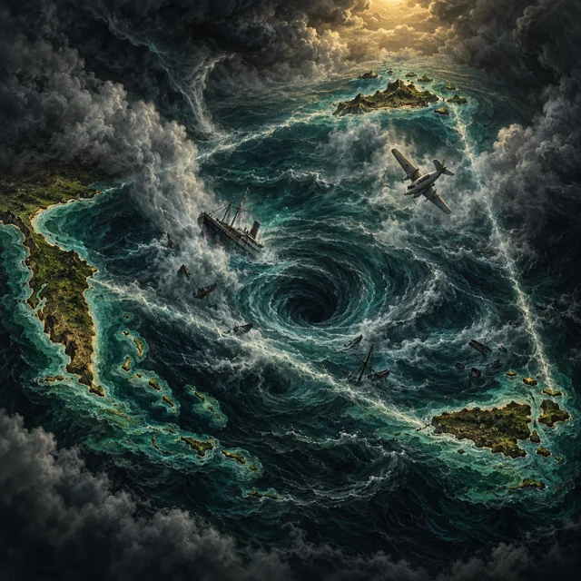
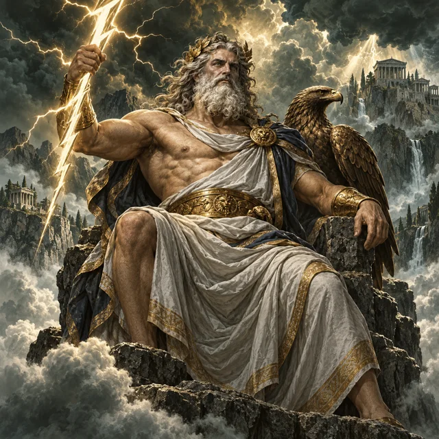
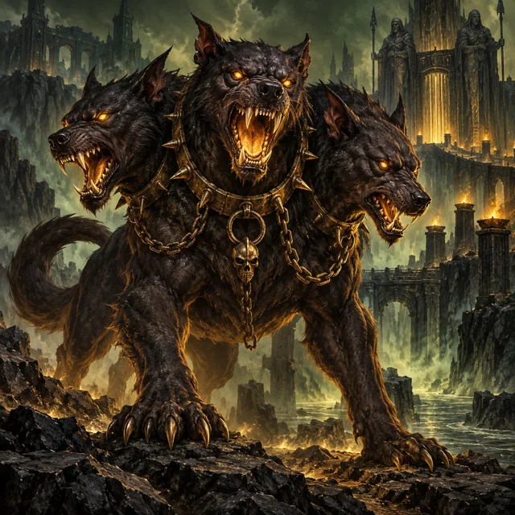
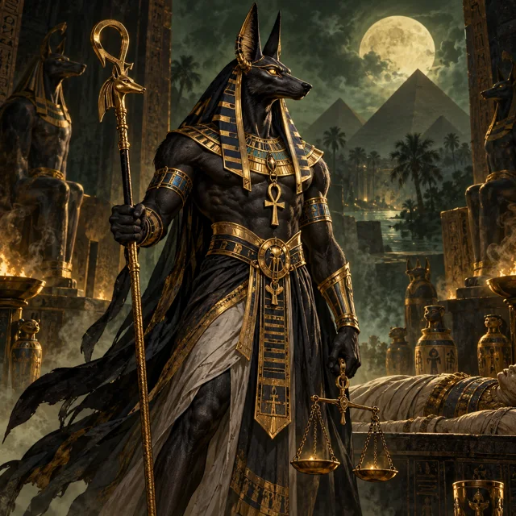
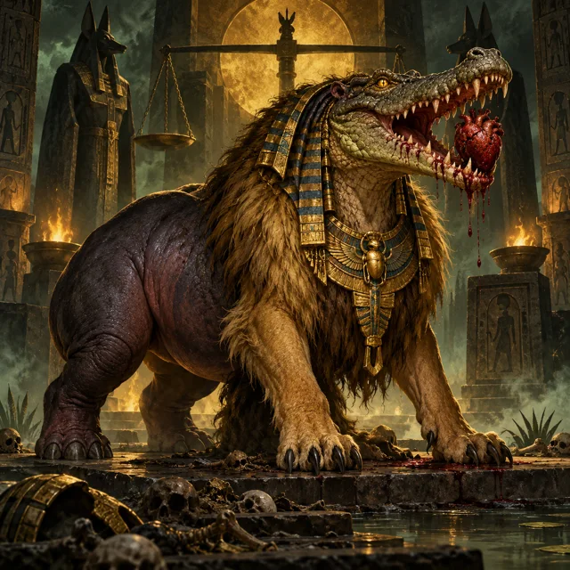

ROOT & RITUAL
ROOT & RITUALMany traditions.
Distinct stories.
42 new reference dossiers join the original 33 fictional and lore records. Background summaries link to sources; story premises are explicitly invented for Root & Ritual.

V4 COLLECTIONVampires & Werewolves
2 introductory dossiers
Browse records →
V4 COLLECTIONIrish Folklore
4 introductory dossiers
Browse records →
V4 COLLECTIONMaritime Folklore
2 introductory dossiers
Browse records →
V4 COLLECTIONAnomalous Locations
1 introductory dossiers
Browse records →
V4 COLLECTIONGreek Gods & Goddesses
12 introductory dossiers
Browse records →
V4 COLLECTIONGreek Mythical Creatures
6 introductory dossiers
Browse records →
V4 COLLECTIONEgyptian Gods & Goddesses
12 introductory dossiers
Browse records →
V4 COLLECTIONEgyptian Mythical Creatures
3 introductory dossiers
Browse records →A banshee is not always a monster
The new Banshee (Bean Sí) entry covers the Irish warning spirit. The existing Bramble Banshee remains a separate invented entity in your setting.
Mermaids and merrows
The general maritime entry and the Irish merrow entry are linked by theme, while keeping the Irish tradition distinct.
The Bermuda Triangle
This is filed as a location, not a creature. Its dossier includes NOAA’s evidence-based explanation and separates that from an invented archival story premise.
Gods, goddesses, and creatures
Greek and Egyptian divinities have separate collections from their mythical creatures. The selected Greek deities are not labeled as a canonical list of the twelve Olympians; Hades, for example, belongs to the underworld.